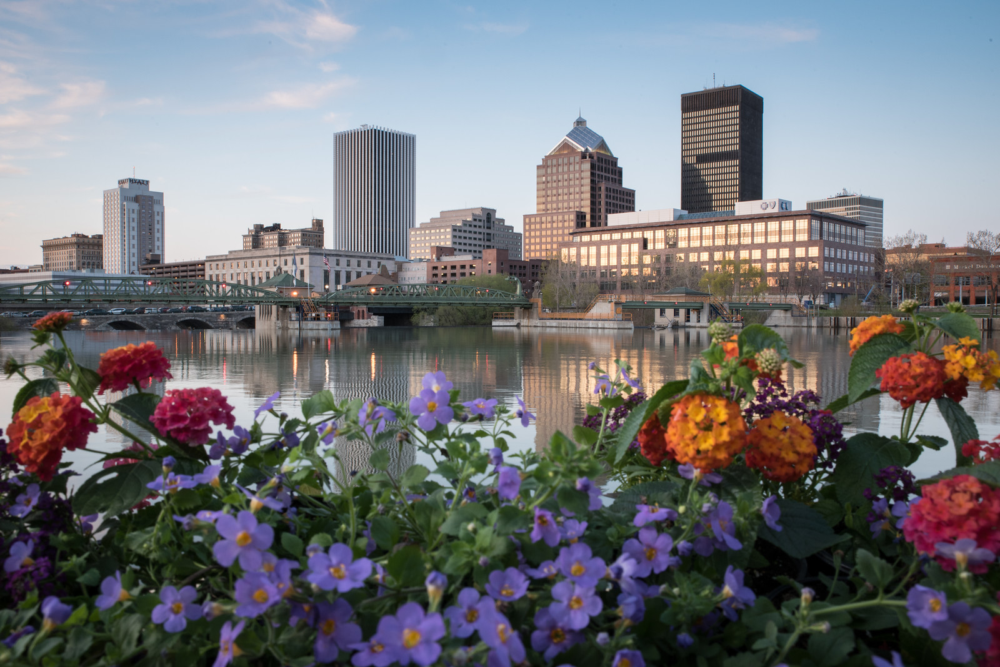
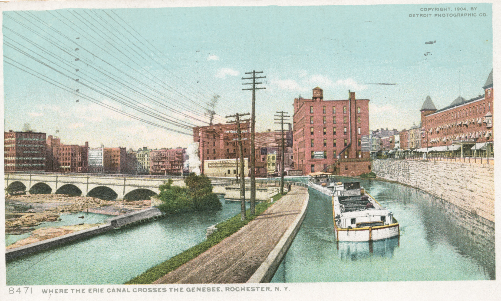

November 2nd to 7th, 2026
A week-long celebration of entrepreneurship and innovation across the Greater Rochester region. Workshops, founder talks, and networking.
Rochester was a tech city before tech cities existed. From the Erie Canal to Kodak to Xerox, our city has been inventing the future since 1825. The founders gathering in November 2026 carry that same audacity.
View Schedule (PDF)
All events are free to attend unless otherwise noted.
Get email reminders for your selected events
Kick off Startup Week with coffee, a light breakfast, and networking from 9:00–9:50 AM, followed by the Founder Risk Lab at 10:00 AM. Carolyn Spencer will use live diagnostic data from founders in the room to reveal shared business challenges and help you discover practical next steps for your business.
Explore startup sales with a primary focus on selling to businesses (B2B), with principles that apply to startups serving any customer. Led by Pat Shreckengast, Managing Director of GrowthX, and hosted at NextCorps.

Join Nicholas Gallo of Troutman Pepper Locke for an introduction to intellectual property protection for early-stage companies. Designed for founders thinking about how to protect their company’s ideas and work as they build a business.
Discover the story behind Rochester’s identity and the legendary mark that represents it. Join RocGrowth for a screening of City Mark at Focus Theater in the Sibley Building, followed by a reception at the Mercantile on Main. Open to everyone.

Continue the evening after City Mark with RocGrowth Creative Collisions at the Mercantile on Main. Meet founders, creatives, and members of Rochester’s startup community over conversation and included hors d’oeuvres. Open to everyone.
An interactive virtual lab with guided exercises and small-group exchange to help founders connect people, knowledge, resources, and opportunities across Rochester.
Find your opportunity in fusion energy with Dr. Matt Moynihan: grants and SBIR funding for startups; customers, optics, and supply chain opportunities for businesses; internships, education, and jobs for students; and research connections and grants for academics.
Hear Karen Skuse, Colin Floom, Ryan Mosher, and Mike Thaney discuss starting and growing companies, navigating setbacks, and lessons learned along the way. Moderated by Connected Know founder Kayte Malik in partnership with Startup Grind Rochester, the evening also includes networking and a showcase of regional startups.
Limited complimentary student tickets are available through the registration page, subject to approval. A university-issued email address is required.

Hear from Marc Iacona through Golisano Institute’s Speaking from Experience series, with an AI session also on the morning’s program. For people interested in entrepreneurship and AI. Registration is required, seats are limited, and business attire is required.
Registration required. Limited seats. Business attire required.

Learn practical ways to improve your startup’s online visibility through SEO, website structure, content, and local search.
Meeting ID: 732 0079 0176 · Passcode: rocstartup
Start with a fireside keynote with Sean Colombo, followed by curated one-on-one meetings with Upstate Venture Connect mentors, typically investors or entrepreneurs who have exited their companies. Registration required. Limited seats.

Join the RIT Simone Center for a marketing session focused on moving a startup from launch to greater visibility. For founders, startup teams, and anyone interested in marketing; open to the wider community as well as students.
Meet startup founders, creatives, mentors, advisors, and supporters at RocGrowth’s informal First Thursday meetup. Connect with people building businesses and creative projects across Rochester. Open to all.
Grant Wrazen led infrastructure at ACV Auctions through an estimated $200 million in scaling costs. Hear what it takes to build platform engineering and infrastructure that can support rapid growth, where those efforts break down, and when the return justifies investing in a platform.
Learn about funding options and fundraising strategies for operating and growing your startup. NextCorps staff and expert panelists will cover venture capital, angel investing, grants, bootstrapping, and crowdfunding, with practical tips, success stories, and time for questions.
Meet people from Rochester’s startup community at a happy hour at NextCorps.
Watch University of Rochester student founders present their business models and compete for funding. The finals are open to everyone, including RIT students and the wider Rochester community.
Competition entry is limited to current University of Rochester students enrolled in the Ain Foundry Program. Applications are due October 27 at 11:59 PM; see the competition page for entry requirements.

Join the happy hour after the Mark Ain Business Model Competition. Open to everyone.
Happy hour follows the competition at the same venue.
Join host David Mammano for the premiere screening of The Good Business Tour’s Rochester episode, celebrating local entrepreneurs. Networking and refreshments are included.
A full-day conference exploring AI innovation, education, healthcare, art, business, and research in Rochester. Tickets include coffee and lunch.
A week-long series of events bringing together students, founders, investors, innovators, business leaders, and community members to celebrate and strengthen Rochester's entrepreneurial ecosystem.
Workshops and panels led by experienced founders and industry experts to sharpen your skills.
Networking events and office hours with investors, mentors, and fellow entrepreneurs.
Founder showcases and business model challenges to test your ideas and gain support.
Scroll through two centuries of relentless invention.

Built by muscle alone, the canal linked the Great Lakes to New York Harbor and put Rochester at the crossroads of American commerce. A village became a boomtown overnight.

Two immigrants perfected mass-produced optical lenses — for spectacles, then microscopes, then cameras. Rochester became the world capital of precision optics.

"You press the button, we do the rest." George Eastman democratized photography. 60,000+ Rochester employees. 90% US film market share.

Color film arrives. Rochester gives the world color photography — and the ability to preserve not just moments, but the warmth and life within them.

The first plain-paper copier ships from Rochester. Xerox becomes a verb. Its research center later invents the GUI, the mouse, and Ethernet.
Photo: Democrat and Chronicle
Same audacity, new model. World-class universities, deep talent, and hundreds of startups writing Rochester's next act.

Join us November 2–7. Explore workshops, founder talks, and networking events across Rochester. View the full schedule and choose the events you’ll attend.
View Schedule (PDF)